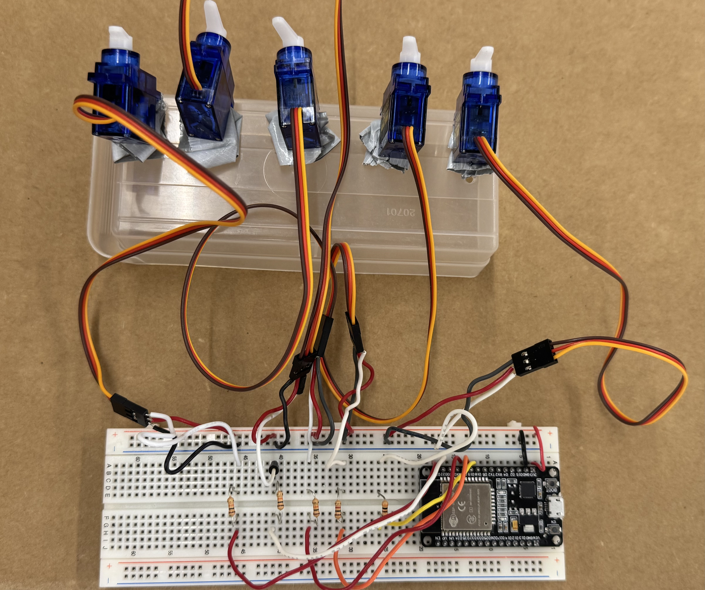
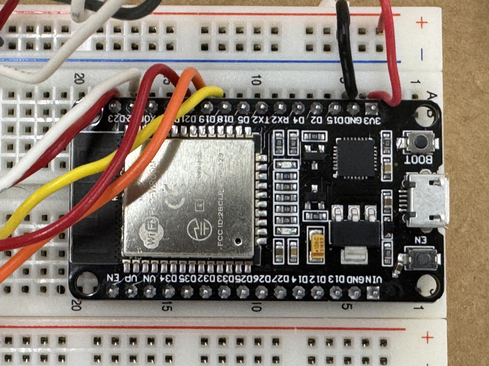
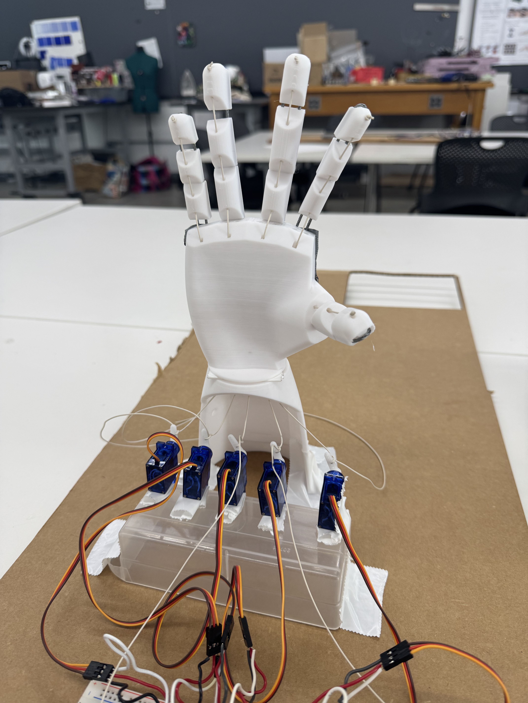
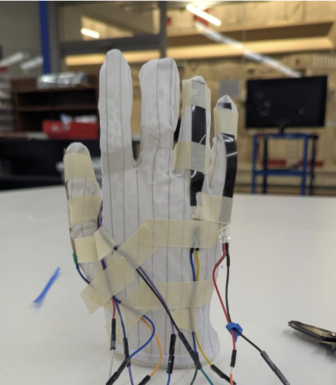
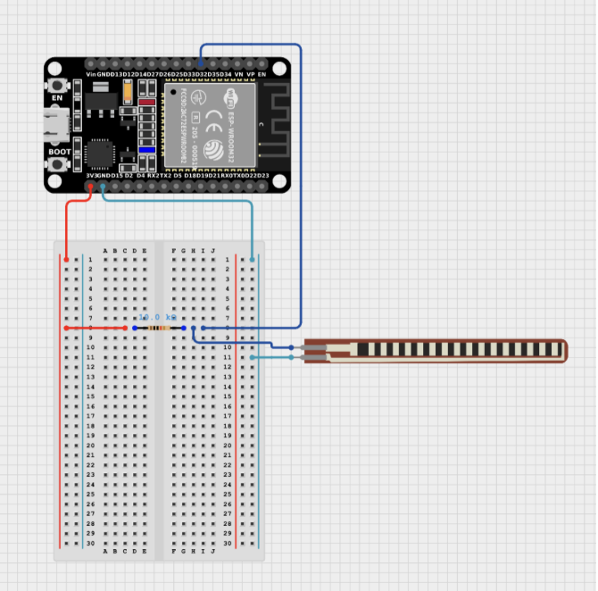
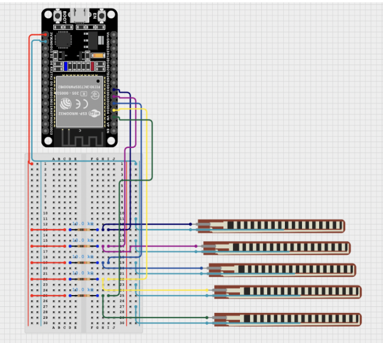
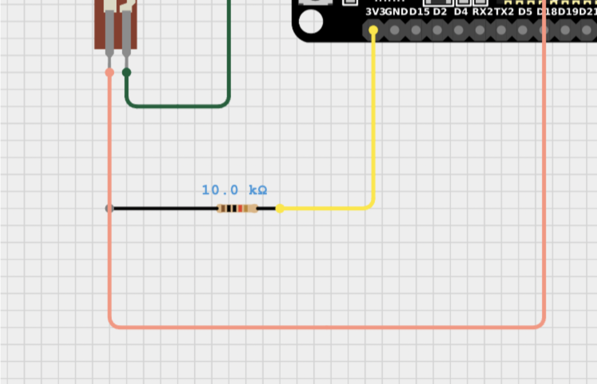
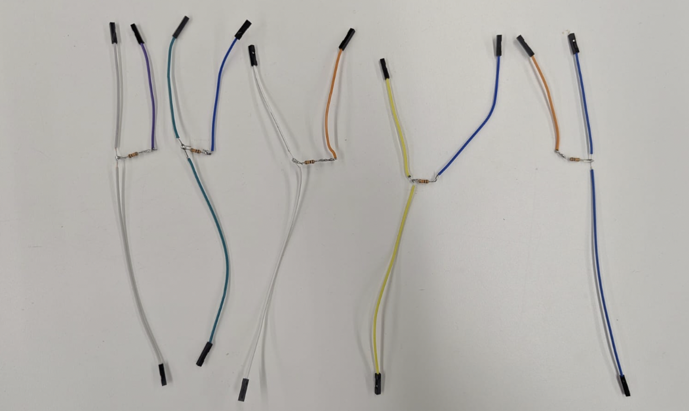
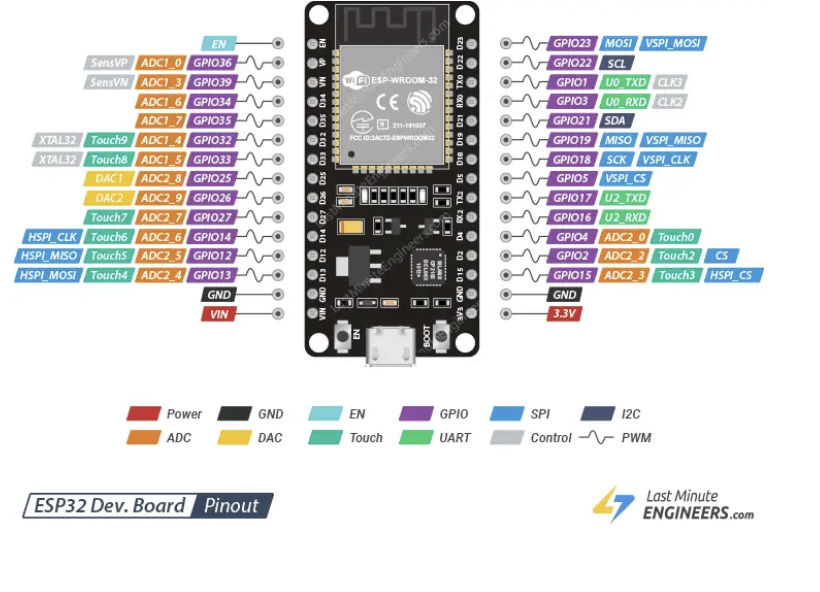
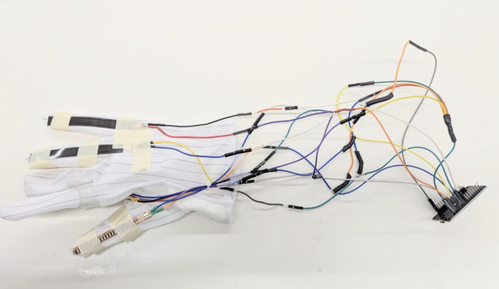

<div class="textcontainer">
<p class="margin"> </p>
<h3>Week 9: Radio, WiFi, Bluetooth (IoT)</h3>
This week, our group made a glove-controlled wireless robotic hand!
<p><br></p>
<div class="video-container">
<video controls muted>
<source src="mov2.mp4" type="video/mp4">
Your browser does not support the video tag.
</video>
</div>
<p><br></p>
<p class="margin"> </p>
<div class="flexrow">
<a id="btn" href="wk9.zip" download>Download my files from this week!
</a>
</div>
<p class="margin"> </p>
We're asked to work with a partner or group of 3 to program one or more microcontroller(s) to obtain and
respond to information from the internet or radio. The project should include at least one input and one output.
<p><br></p>
Our group was Hiteyjit (Joey) and I. The idea is that one person puts on
a glove with resistor sensors on each finger. When a finger is bent, the sensor reads a different resistance into the
ESP32 glove microcontroller. This ESP32 reads the data from all 5 fingers every so often and relays the information
over ESP-Now to a second ESP32 located in the robotic hand. Based on the data, it'll turn servos attached to strings,
and each string will in turn move a specific finger up or down.
<p><br></p>
<h3>Part 1: Hand</h3>
The first part was the hand. I downloaded from 'Viral Science' online their 3D files for a robot hand. All of those files
can be found in the downloadable button, in stl format.
<o>
<li>Once downloaded, open them up in Prusa Slicer. You can do multiple files in the same print!</li>
<li>Reposition the stl files in the print so they are not overlapping.</li>
<li>Select supports for base and 15 percent infill. We used a white PLA material to print.</li>
<li>Plan your time, it took us in total 24 hours to print.</li>
</o>
<p><br></p>
<img class="center_image" src="hand1.jpeg">
<p><br></p>
Once done, next, gather string and either (1) super-thin rubber with scissors or (2) bendable metal wire with wire cutters. In any case, you
want that second material to be 'firm but bendable'. We used twisted wire (see below).
<o>
<li>Start with one set of finger components. Take the wire and weave it through the holes in the fingers.</li>
<li>Have a decent amount of wire at the ends of the finger for support. You can either tape it to the back of the hand or insert it into the
pre-cut out pairs of holes in the hand and tie what remains in the back of the hand. We did the former because metal was not as bendy as rubber.</li>
<li>Take the string and insert it through the tinier, center holes in the fingers.</li>
<li>Push it down into the string-hand hole for its respective finger. The string will pop out the bottom of the hand.</li>
<li>When done, tie the string at the top of the finger and cut off any excess.</li>
</o>
<p><br></p>
<div class="img-container">
<img src="hand3.jpeg">
<img src="hand2.jpeg">
</div>
<p><br></p>
Repeat this for all five fingers. Here is what it looks like:
<p><br></p>
<img class="center_image" src="hand4.jpeg">
<p><br></p>
Finally, you'll want to grab 5 servos. Set up the servos based on the following circuit.
The servos should have little handles attachable to their motor. Attach the handles to the servo motor
so that they face up when the motor is turned as far as it can go (its 'starting position').
<p><br></p>
<div class="img-container">
<p></p>
<p></p>
</div>
<p><br></p>
The servos will eventually be tied to the strings. You'll tie the string in a knot around the handles.
No need to do this just get, as you'll want to verify they work properly with the glove, radio, and code.
But, once those things are done, that's the last step! I recommend that you add some tension by pulling on the rope
before tying it. The tension can help pull the finger down easier when the servo turns.
<p><br></p>
<p></p>
<p><br></p>
<h3>Part 2: Glove</h3>
To make the glove, you'll want to grab these components:
<o>
<li>5x Flex/Bend sensors (similar to these or these)</li>
<li>1x Glove (of any material, ideally a flexible cloth-based glove)</li>
<li>5x 10K Ohm resistors</li>
<li>A handful of male-male (pin-pin), male-female (pin-socket), and female-female (socket-socket) wires</li>
</o>
<p><br></p>
Start by assembling the glove. This involves primarily two steps:
<o>
<li>Solder individual wires to all each of the sensor's terminals.
Usually, flex sensors have quite small terminal points on them, so it is best to solder on wires so they can be attached to later circuit components. We recommend using wires with socket pins so you can easily attach them to the ESP32 pins and any other circuit components.
As an alternative, you may also find it easier to strip and directly solder the copper of the wire onto the sensor's terminals.
</li>
<li>Attach the sensors to the glove. Allow them to retain some form of movement when the fingers bend. We allowed for this by using two methods: sewing and taping the gloves.
By sewing the sensors onto the glove, we could create a 'pocket' which the glove could simply be tightened into and remain attached with the glove
However, this became a little troublesome as the threads became loose after a few cycles of the fingers bending. As a result, we resorted to using tape at the base and tips of the fingers to anchor the sensors in place to allow them to bend effectively as the fingers bent.
</li>
</o>
This is how the sensors should look on the glove once you're done:
<p><br></p>
<p></p>
<p><br></p>
Once the sensors are attached to the glove, you can move on to actually making the circuit that will sense the fingers bending.
The circuit is pretty simplistic. Essentially, each and every flex sensor acts as a variable resistor.
As the sensor bends, the resistance changes. Hence, one would need to wire these to a microcontroller (in our case, an ESP32) in a way that would allow the device to pick up on resistance changes.
The ESP32 cannot inherently detect resistance changes, hence we would need to utilize a voltage divider circuit to reflect changes in resistance as changes in voltage read by the board.
<p><br></p>
Since it is a simple change in voltage that would be detected, the values only need to be AnalogRead in the ESP32 (see the code later on).
You can use a breadboard to build this circuit, or, can alternatively solder together the circuit utilizing wires and resistors.
We utilized 10K Ohm resistors, but you could likely use different ones as well. All you would have to do is adjust the code to the new voltage values obtained.
<p><br></p>
Here is a diagram of the basic voltage divider circuit we used.
The right-picture shows us extrapolating the left-picture to have 5 sensors.
<p><br></p>
<div class="img-container">
<p></p>
<p></p>
</div>
<p><br></p>
We wanted to avoid using breadboards for portability, so we transposed the voltage divider circuit straight onto wire-wire connections. For this we:
<o>
<li>Took one male-female wire (wire 'A') and stripped a small part about ¼ of the way from the top (while making sure the surrounding insulation on the wire still remains).</li>
<li>Hooked a 10K ohm resistor around this exposed wire on wire A (hence connecting the resistor in series with wire A)</li>
<li>Attached another wire (wire 'B') on the other end of the resistor (i.e connecting it in series with the resistor). Wire B ends with a socket/female plug (so it can be attached onto the ESP32 board easily).</li>
<li>Soldered all the connections together (& optionally also made it easier to manage by covering parts with heat shrink).</li>
<li>Attached the male end of wire A to the flex sensor</li>
<li>Attached the female end of wire B to the power from the board</li>
<li>Attached the female end of wire A to an ESP32 pin</li>
</o>
<p><br></p>
The left picture shows how the circuit would look for a single flex sensor without the breadboard.
Ther right picture shows the circuit in real life, for all five of our soldered-together wires.
<p><br></p>
<div class="img-container">
<p></p>
<p></p>
</div>
<p><br></p>
Since there are a limited number of power and ground pins, we also soldered together a wire that branches into five different wires
(each of which could connect to one sensor at a time). We made two of these, one for the positive terminal, one for ground.
<p><br></p>
PLEASE NOTE: since this project uses the ESP32's WiFi functionalities, make sure to utilize the board's ADC1 pins for reading the sensors (instead of ADC2).
ADC2 pins are used during WiFi transmissions, and this process will interfere with the monitoring of sensor values if connected to the same pins.
In other words, it'll just output '0' for the data if the data is coming from a ADC2 pin.
If you are unsure about which pins are ADC1 or ADC2, the best technique is to refer to an ESP32 Pinout diagram.
The specific ESP32 we were using was the ESP32 Dev-Kit, so this is the Pinout chart relevant to us.
In our case, we utilized pins 32, 33, 34, 35, and VN (which is coded as 39 in the ESP32 code).
<p><br></p>
<p></p>
<p><br></p>
Wire the sensors to the board, and you're good to go and ready to receive glove data!
This is how ours looked like. You should aim for something similar as well:
<p><br></p>
<p></p>
<p><br></p>
<h3>Part 3: Code and Integration</h3>
So far, we have two circuits: one for the servos, and one for the glove.
Each has an ESP32. We'll use ESP-Now to connect the two ESP32s together.
<p><br></p>
Step 1: determine the MAC address of the hand-ESP32 (receives data). Copy-paste this code into ArduinoIDE
with the correct selected Module (ESP32 Dev Module) and port (usually dev/.../serial). Click 'upload' to
upload the code to the ESP32 and watch the Serial output on ArduinoIDE for the outputted MAC Address.
<div class="code-box">
<pre><code class="language-arduino">
Rui Santos & Sara Santos - Random Nerd Tutorials
Complete project details at https://RandomNerdTutorials.com/get-change-esp32-esp8266-mac-address-arduino/
Permission is hereby granted, free of charge, to any person obtaining a copy of this software and associated documentation files.
The above copyright notice and this permission notice shall be included in all copies or substantial portions of the Software.
#include WiFi.h
#include esp_wifi.h
void readMacAddress(){
uint8_t baseMac[6];
esp_err_t ret = esp_wifi_get_mac(WIFI_IF_STA, baseMac);
if (ret == ESP_OK) {
Serial.printf("%02x:%02x:%02x:%02x:%02x:%02x\n",
baseMac[0], baseMac[1], baseMac[2],
baseMac[3], baseMac[4], baseMac[5]);
} else {
Serial.println("Failed to read MAC address");
}
}
void setup(){
Serial.begin(115200);
WiFi.mode(WIFI_STA);
WiFi.STA.begin();
Serial.print("[DEFAULT] ESP32 Board MAC Address: ");
readMacAddress();
}
void loop(){
}
</code></pre>
</div>
<p><br></p>
Step 2: with the MAC address, copy-paste this code into a new file for the glove-ESP32 (sends data). Change the MAC
address to the one from Step 1. Upload the code to the glove-ESP32.
<div class="code-box">
<pre><code class="language-arduino">
// PHYS 70 Glove Microcontroller
// Imports and Installs
#include esp_now.h
#include WiFi.h
//Initializing Sensor pins
const int pinPinky = 33;
const int pinRing = 34;
const int pinMiddle = 35;
const int pinIndex = 32;
const int pinThumb = 39;
unsigned long lastTime = 0;
const unsigned long interval = 100;
uint8_t broadcastAddress[] = {0XC0, 0X5D, 0X89, 0XAF, 0XE8, 0X6C};
typedef struct struct_message {
float glovePinky;
float gloveRing;
float gloveMiddle;
float gloveIndex;
float gloveThumb;
} struct_message;
struct_message myData;
esp_now_peer_info_t peerInfo;
// Callbacks
void OnDataSent(const uint8_t *mac_addr, esp_now_send_status_t status) {}
// Setup
void setup() {
Serial.begin(9600);
WiFi.mode(WIFI_STA);
// Initialize ESP-Now and Peer Info
if (esp_now_init() != ESP_OK) {
Serial.println("Error initializing ESP-NOW");
return;
}
esp_now_register_send_cb(OnDataSent);
memcpy(peerInfo.peer_addr, broadcastAddress, 6);
peerInfo.channel = 0;
peerInfo.encrypt = false;
if (esp_now_add_peer(&peerInfo) != ESP_OK) {
Serial.println("Failed to add peer");
return;
}
}
// Loop
void loop(){
int valuePinky;
int valueRing;
int valueMiddle;
int valueIndex;
int valueThumb;
valuePinky = analogRead(pinPinky);
valueRing = analogRead(pinRing);
valueMiddle = analogRead(pinMiddle);
valueIndex = analogRead(pinIndex);
valueThumb = analogRead(pinThumb);
Serial.print(valuePinky);
Serial.print("\t");
Serial.print(valueRing);
Serial.print("\t");
Serial.print(valueMiddle);
Serial.print("\t");
Serial.print(valueIndex);
Serial.print("\t");
Serial.println(valueThumb);
if (millis() - lastTime > interval) {
lastTime = millis();
myData.glovePinky = valuePinky;
myData.gloveRing = valueRing;
myData.gloveMiddle = valueMiddle;
myData.gloveIndex = valueIndex;
myData.gloveThumb = valueThumb;
// send message
esp_err_t result = esp_now_send(broadcastAddress, (uint8_t *) &myData, sizeof(myData));
if (result == ESP_OK) {
Serial.println("Success sending the data");
}
}
delay(200);
}
</code></pre>
</div>
<p><br></p>
Step 2: copy-paste this code into a new file for the hand-ESP32 (sends data). Upload the code to the glove-ESP32.
When testing this code, I recommend untying the servos from the strings in case the 'starting' and 'end' angle are a bit
different on your end (this way you don't over-rotate a finger).
<div class="code-box">
<pre><code class="language-arduino">
// PHYS 70 3D Printed Hand Microcontroller
// Imports and Installs
#include esp_now.h
#include WiFi.h
#include ESP32Servo.h
// Variables
// pin numbers
int pinPinky = 23;
int pinRing = 22;
int pinMiddle = 21;
int pinIndex = 19;
int pinThumb = 18;
int thresholdPinky = 800; // type 1 resistor sensor: if data below this, bend finger
int thresholdRing = 400; // type 1 resistor sensor: if data below this, bend finger
int thresholdMiddle = 4000; // type 2 resistor sensor: if data above this, bend finger
int thresholdIndex = 4000; // type 2 resistor sensor: if data above this, bend finger
int thresholdThumb = 4000; // type 2 resistor sensor: if data above this, bend finger
// message sent by glove; how much 'bend' there is per glove sensor (higher number = more bend)
typedef struct struct_message {
float glovePinky;
float gloveRing;
float gloveMiddle;
float gloveIndex;
float gloveThumb;
} struct_message;
struct_message myData;
unsigned long lastTime = 0;
int threshold = 10; // how much 'bend' we need from glove to trigger an event
const unsigned long waitInterval = 1000; // how much to wait before next movement
// Class Servo Definition
class UselessServo {
Servo servo;
int pos;
int startPos;
int endPos;
int increment; // amount we move servo by at each increment
int updateInterval; // determine speed by which we move our servo
unsigned long lastUpdate; // counter to see how much time has passed
public:
UselessServo (int interval, int start, int target) {
// initialize class
updateInterval = interval;
startPos = start;
pos = startPos;
endPos = target;
increment = -10;
}
void Attach (int pin) {
// 'attach' or 'put' servo to its initial position
servo.attach(pin);
servo.write(startPos);
}
void toTarget() {
// move servo incrementally to target end position
servo.write(endPos);
}
void Return() {
// move servo incrementally to initial start position
servo.write(startPos);
}
bool isMoving() {
// if not moving, return 0, otherwise return 1
return !(pos == endPos || pos == startPos);
}
};
// Class Servo Objects
UselessServo servoPinky(1, 180, 0);
UselessServo servoRing(1, 180, 0);
UselessServo servoMiddle(1, 180, 0);
UselessServo servoIndex(1, 180, 0);
UselessServo servoThumb(1, 180, 0);
// Callbacks
void OnDataRecv(const uint8_t * mac, const uint8_t *incomingData, int len) {
memcpy(&myData, incomingData, sizeof(myData));
// If we swish the wand hard enough and a bit after a previous swish, it'll trigger an event
if (millis() - lastTime >= waitInterval) {
Serial.println("Received: ");
Serial.println(myData.glovePinky);
Serial.println(myData.gloveRing);
Serial.println(myData.gloveMiddle);
Serial.println(myData.gloveIndex);
Serial.println(myData.gloveThumb);
myData.glovePinky <= thresholdPinky ? servoPinky.toTarget() : servoPinky.Return();
myData.gloveRing <= thresholdRing ? servoRing.toTarget() : servoRing.Return();
myData.gloveMiddle >= thresholdMiddle ? servoMiddle.toTarget() : servoMiddle.Return();
myData.gloveIndex >= thresholdIndex ? servoIndex.toTarget() : servoIndex.Return();
myData.gloveThumb >= thresholdThumb ? servoThumb.toTarget() : servoThumb.Return();
lastTime = millis();
}
}
// Function: Setup
void setup() {
// Initialize Serial and Time
lastTime = millis();
Serial.begin(115200);
// Initialize Servos, WiFi
servoPinky.Attach(pinPinky);
servoRing.Attach(pinRing);
servoMiddle.Attach(pinMiddle);
servoIndex.Attach(pinIndex);
servoThumb.Attach(pinThumb);
Serial.println("Attached");
WiFi.mode(WIFI_STA);
// Initialize ESP-NOW
if (esp_now_init() != ESP_OK) {
Serial.println("Error initializing ESP-NOW");
return;
}
// Initialize Callback
esp_now_register_recv_cb(esp_now_recv_cb_t(OnDataRecv));
}
// Function: Loop
void loop() {
}
</code></pre>
</div>
<p><br></p>
After this, you're done! Feel free to test it out.
We're holding the servos with our fingers just so they stay in place. In the future, perhaps you can 3D print little holders and screw the servos in so they're more tight.
<p><br></p>
<div class="video-container">
<video controls muted>
<source src="mov1.mp4" type="video/mp4">
Your browser does not support the video tag.
</video>
<video controls muted>
<source src="mov2.mp4" type="video/mp4">
Your browser does not support the video tag.
</video>
</div>
<p><br></p>
</div>